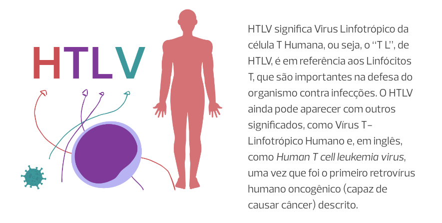
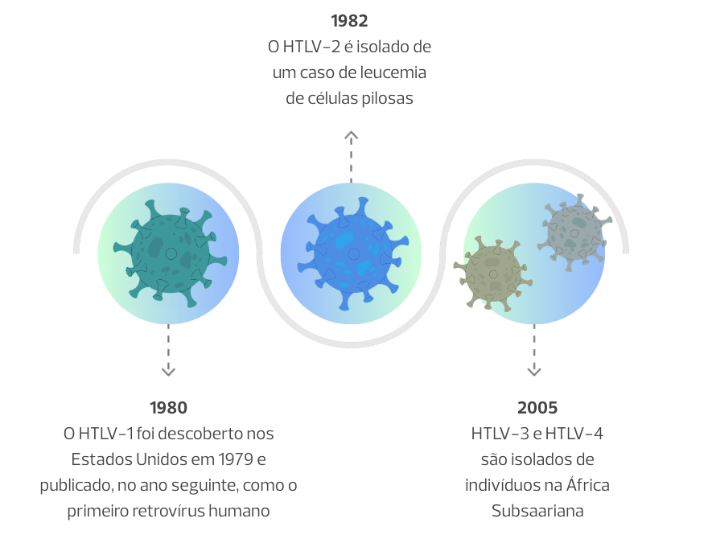
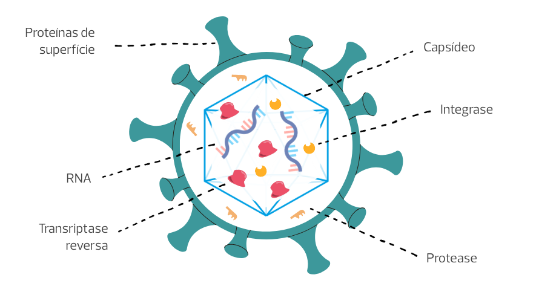
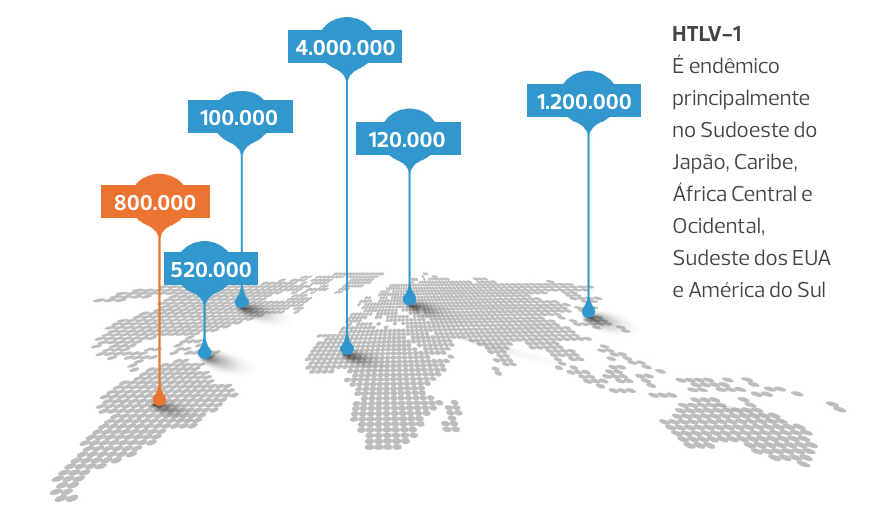

Módulo 1 | Aula 1
Introdução ao HTLV: Histórico, Transmissão, Aspectos Virais, Epidemiologia e Prevenção da Transmissão
Objetivos de aprendizagem
- Conhecer os aspectos históricos e epidemiológicos relacionados ao HTLV.
- Compreender as formas de transmissão do HTLV.
- Entender as características virais e como se relacionam com a replicação e propagação do vírus.
- Conhecer as formas de prevenção da transmissão do HTLV.
HTLV: O primeiro retrovírus humano
O HTLV-1 foi o primeiro retrovírus identificado a causar doença em seres humanos. Hoje, já são quatro tipos de HTLV descritos (HTLV-1, HTLV-2, HTLV-3 e HTLV-4) e vários subtipos, sendo o HTLV-1 o principal associado às manifestações clínicas.
Os vírus são agentes infecciosos que precisam estar em uma célula para poder se reproduzir, e com o HTLV não é diferente. Inclusive, o nome dele já explica quais células ele infecta preferencialmente, os linfócitos T.
O que significa HTLV
O HTLV é um retrovírus, um vírus que tem RNA (Ácido Ribonucleico) como material genético e que possui uma enzima chamada transcriptase reversa, característica dos retrovírus. A descoberta do HTLV foi publicada em 1980, antes mesmo da identificação do HIV (Vírus da Imunodeficiência Humana), em 1983. Entretanto, devido à dimensão e gravidade da infecção pelo HIV e da epidemia de HIV∕AIDS, o HTLV ficou fora do foco das pesquisas.
Linha do tempo da descoberta dos tipos de HTLV
Assim, o HTLV foi sendo negligenciado do ponto de vista científico e farmacêutico e permaneceu pouco conhecido pela população geral e até mesmo por profissionais de saúde durante muito tempo. Ainda hoje, não há vacinas disponíveis e nem tratamentos antirretrovirais específicos, mesmo havendo diversas doenças associadas ao vírus.
Dos tipos de HTLV, o HTLV-1 é o mais frequente e associado a doenças. O HTLV-2, mais prevalente em populações nativas e usuários de drogas, é menos patogênico, embora seu envolvimento já tenha sido descrito em algumas doenças inflamatórias e neurológicas.
A infecção pelo HTLV é uma das mais negligenciadas da atualidade, em parte devido aos aspectos epidemiológicos e também pela sua complexidade. É verdade que a retrovirologia, ciência que estuda os retrovírus, não tem na simplicidade a sua maior virtude.
Formas de Transmissão do HTLV
A transmissão do HTLV-1 pode ocorrer por via sexual e hematogênica, através do contato com fluidos corpóreos contendo linfócitos infectados, como sangue, sêmen e secreção vaginal. Porém, o vírus é transmitido principalmente pela via vertical, ou seja, de mãe para filho, de geração em geração, a partir da amamentação (ou mais raramente durante a gestação).
Formas de transmissão do HTLV

O compartilhamento de seringas e contato com sangue através de transfusões também são formas de transmissão. No Brasil, a triagem para HTLV-1/2 é obrigatória nos bancos de sangue desde 1993, e de órgãos, desde 2009, o que reduziu os riscos associados a essas vias de transmissão.
O diagnóstico de HTLV muitas vezes vem como uma grande mudança para as pessoas que vivem com o HTLV. Veja agora o relato de Adijeane Oliveira e entenda como esse vírus pode modificar a vida de uma pessoa.
Adijeane Oliveira – Fundadora do HTLVida
Fonte: CVFAspectos Virais
O HTLV infecta os linfócitos T, as mesmas células que o HIV consegue infectar. Entretanto, o HIV é um retrovírus linfolítico, ou seja, que destrói os linfócitos, enquanto o HTLV os infecta sem destruí-los. Isso faz com que o HTLV cause uma infecção sistêmica crônica, que passa clinicamente despercebida ao longo da vida de grande parte das pessoas que vivem com HTLV (PvHTLV).
Isso significa que o HTLV-1 não causará sintomas por um efeito destrutivo das células infectadas, mas sim através da expansão de linfócitos e produção de moléculas inflamatórias, como citocinas e quimiocinas pró-inflamatórias. Esse efeito destrutivo pode comprometer sistemas importantes do corpo, como o sistema nervoso central.
Agora vamos entender um pouco mais sobre as características do HTLV-1
A partícula viral do HTLV-1 é formada por um envelope de 80 a 110 nanômetros de diâmetro. Para você ter uma ideia da escala, isso é cerca de mil vezes menor que a espessura de um fio de cabelo humano.
Estrutura do HTLV-1
O genoma do HTLV-1 é de RNA. Ele possui duas fitas simples de RNA e, por isso, é um vírus de RNA de fita simples diploide. Nela, são encontrados genes estruturais (gag, pol, env), genes reguladores (tax e rex) e genes acessórios (p12, p13, p30 e HBZ). Esses genes desempenham importantes funções na replicação do vírus, regulação, modulação da resposta imune da célula hospedeira entre outros.
Os genes são responsáveis por codificar diferentes proteínas. Codificar significa “traduzir” as informações contidas no RNA, ou seja, cada gene estrutural é responsável pela produção de diferentes proteínas presentes na estrutura do vírus. Por exemplo, o gene gag é responsável pelas proteínas do capsídeo do HTLV-1, como p52 e suas derivadas p19 e p24. O gene pol, por sua vez, é responsável pela codificação das enzimas transcriptase reversa e integrase e o gene env pela produção das proteínas gp21 e gp46.
Como confirmar uma infecção por HTLV
Uma das formas de confirmar a infecção pelo HTLV é pelo diagnóstico por uma técnica chamada Western Blot. Essa técnica permite diferenciar o HTLV-1 do HTLV-2 a partir da busca de proteínas dos vírus, como rgp46 I, rgp46 II, p53, gp46, p36, p32, p28, p26, p24, p19 e GD21. Para ver mais sobre essa técnica, vá para a aula 3, desse módulo.
Além dos genes estruturais, os genes reguladores são responsáveis por proteínas muito importantes no ciclo do HTLV-1. O gene tax, por exemplo, codifica uma proteína de mesmo nome, Tax, que já foi relacionada à ativação de genes de citocinas nas células do hospedeiro.
Agora vamos entender como o HTLV se replica e infecta as células
Primeiro, é importante lembrar que o HTLV-1 infecta Linfócitos T, uma célula do sistema imunológico, embora possa infectar vários outros tipos celulares.
Os Linfócitos T são chamados assim porque amadurecem no timo, uma glândula muito importante na regulação imunológica e podem se diferenciar de acordo com a função em vários tipos. O tipo que o HTLV-1 infecta principalmente é o Linfócito T CD4+, também chamados Linfócitos T auxiliares.
Antes de continuarmos, gostaríamos de apresentar o Viraldo. Esse personagem, que representa o próprio HTLV, é quem vai explicar como consegue infectar os Linfócitos T CD4 e se replicar dentro deles.
Ciclo de replicação do HTLV
Fonte: CVFJá dá para perceber, em parte, o porquê de ainda não termos terapias antirretrovirais contra o HTLV-1, não é mesmo? Por isso, as características virais e as interações do vírus com o sistema imunológico da pessoa vivendo com HTLV são tão importantes de serem estudados.
Epidemiologia do HTLV
Estima-se que existam de 10 a 20 milhões de pessoas vivendo com HTLV (PvHTLV) em todo o mundo. As maiores prevalências são encontradas no Japão, África, ilhas do Caribe e América do Sul, locais onde mais de 1% da população pode estar vivendo com o vírus.
Apesar da infecção pelo HTLV-1 ocorrer em diversas partes do mundo, sua prevalência varia de acordo com a localização geográfica, fatores étnicos e raciais ou, ainda, com maior exposição. Isso ocorre com alguns grupos populacionais, como observado na Bahia, contribuindo para o Brasil constituir a maior prevalência absoluta de casos.
O Brasil é o país com maior número de casos de HTLV no mundo. Estima-se que de 800 mil a 2,5 milhões de pessoas vivam com o vírus. Os estados da região Nordeste, como Bahia, Pernambuco e Maranhão, possuem as maiores soroprevalências, podendo chegar a 1,8% na Bahia, enquanto a região Sul do país apresenta 0,04%.
No entanto, a maioria dos dados de prevalência são obtidos em bancos de sangue, o que significa que esses dados podem estar subestimados. Nos bancos de sangue, a triagem para a infecção pelo HTLV em doadores se tornou obrigatória somente a partir de 1993.
Distribuição da infecção pelo HTLV-1 no mundo
A soroprevalência entre os doadores de sangue no Brasil é mais alta em negros, com idade acima de 50 anos, mulheres e indivíduos de baixa renda. Essa tendência, apesar de estável ao longo do tempo, tem se modificado, com prevalência e fatores de risco para infecção pelo HTLV aumentando em homens brancos e mais jovens em cidades como Recife, Belo Horizonte, Rio de Janeiro e São Paulo.
Provavelmente você lembra que uma das formas de transmissão do HTLV é verticalmente, através do aleitamento materno. É por isso que é tão importante avaliar como está a prevalência de HTLV-1/2 nas gestantes. Embora essa prevalência seja desconhecida em diversos estados do Brasil, estimativas para o estado da Bahia, indicam que até 1% das gestantes estão infectadas. Isso contribui para o mais alto número de transmissão vertical, com cerca de 7 mil gestantes vivendo com HTLV-1 e 1400 bebês infectados ao ano.

VALE RESSALTAR QUE…
…a interrupção da transmissão vertical poderia evitar que crianças desenvolvessem, na vida adulta, doenças graves associadas ao HTLV-1, como a Leucemia/Linfoma de Células T do Adulto (ATL) ou a Mielopatia Associada ao HTLV-1/Paraparesia Espástica Tropical (HAM/TSP). A primeira, um câncer de difícil tratamento e elevada mortalidade e a segunda, uma doença degenerativa da medula que pode levar à paralisia e à necessidade do uso de cadeira de rodas.
E o que poderemos fazer para diminuir a prevalência do HTLV?
Prevenção da Transmissão do HTLV
Recentemente, a Organização Mundial da Saúde (OMS) reconheceu o HTLV-1 como um problema de saúde pública. Por se tratar de um vírus que apresenta diversas formas de transmissão possíveis, a prevenção pode acontecer de diferentes maneiras.
Formas de Prevenção da Transmissão do HTLV
![Imagem com as formas de transmissão do HTLV. São elas, a Prevenção da Transmissão Parenteral, que pode ser prevenico com a triagem de doadores de sangue; com testagem para HTLV-1/2 em caso de doadores, receptores, acidentes com perfurocortantes; e com Educação em Saúde.
A Prevenção da Transmissão Sexual pode ocorrer com o uso de preservativo nas relações sexuais; com a triagem para HTLV-1/2 em indivíduos com suspeita ou infecção por IST e com a reprodução assistida para casais sorodiscordantes que desejam concepção. Já a Prevenção da Transmissão Vertical pode ser feita com a testagem no pré-natal, o acolhimento das gestantes vivendo com o vírus e a contraindicação à amamentação e uso de inibidores de lactação.](../assets/images/modulo1/aula1/img6.png)
É importante frisar que a prevenção da transmissão vertical tem sido considerada prioritária no enfrentamento ao HTLV por várias agências internacionais, como Organização Panamericana de Saúde (OPAS) e a OMS. O Brasil também está focado na prevenção da transmissão vertical do HTLV-1. Tanto que o HTLV foi incluído no programa Brasil Saudável, que visa eliminar doenças determinadas socialmente.
Além do enfoque prioritário para a redução da transmissão vertical, a educação continuada em saúde e campanhas de educação em saúde e para a saúde são fundamentais na prevenção da transmissão do HTLV de modo geral. Isso significa que é importante que o vírus seja conhecido por mais pessoas, que haja divulgação de informações sobre o HTLV por diversas mídias, bem como o desenvolvimento de materiais que possuam linguagem mais acessível e ações que abordem o HTLV.
Ações sobre HTLV podem ser realizadas para diversos públicos, como na forma de oficinas para profissionais ou até mesmo em ações de educação em saúde. Recentemente, em um desses eventos, o Fiocruz pra Você, promovido pela Fundação desde 1994, o HTLV foi apresentado à população em cidades como Salvador (BA) e Goiana (PE).
Veja agora um vídeo de como foi o evento promovido pela Fiocruz Pernambuco em parceria com a Hemobras, que aconteceu em Goiana. Nesse evento o público foi apresentado ao Viraldo, o personagem HTLV que já conhecemos.
HTLVBrasil no Fiocruz Pra Você 2024 (Goiana-PE)
Fonte: CVFVocê chegou ao final da aula
Nessa aula, você conheceu os aspectos históricos e epidemiológicos e as formas de transmissão do HTLV. Você também aprendeu sobre caraterísticas virais e como se relacionam com a replicação e propagação do vírus, além de ter conhecido algumas das formas de prevenção da transmissão do HTLV.

AUTORES: Augusto Penalva, Clarice Neuenschwander Lins de Morais, Heytor Victor Pereira da Costa Neco